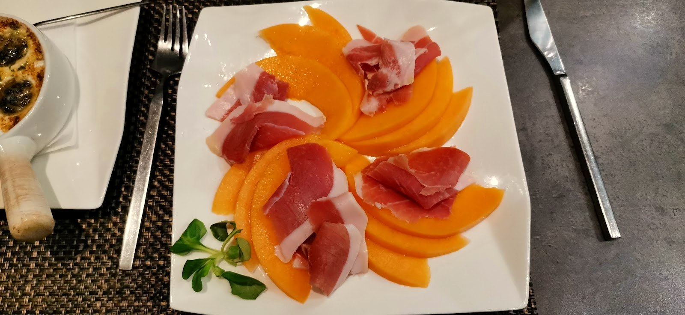
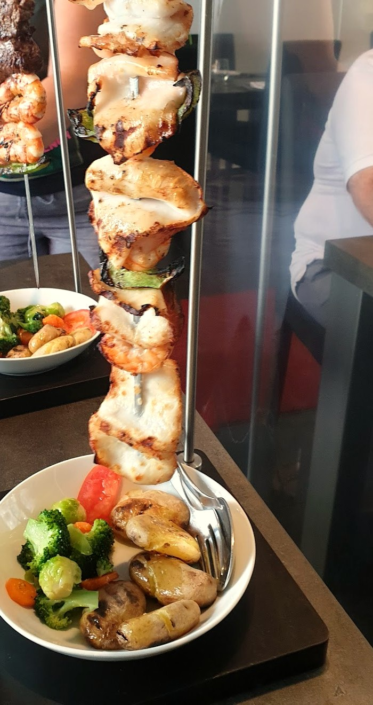
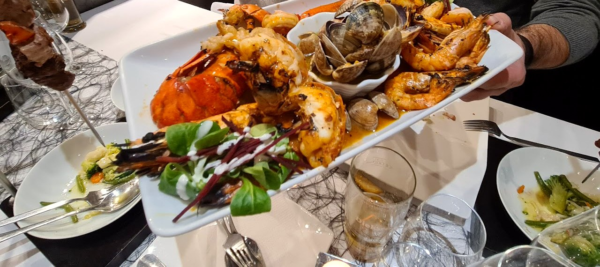

Table du Chef
Cuisine portugaise, sobre & chic.
Une petite table du centre de Dudelange — brochettes dressées en salle, produits de la mer, et de généreuses portions préparées avec soin.
Une petite table, au cœur des Terres Rouges.
Table du Chef occupe une devanture discrète de la rue du Commerce, à Dudelange — la ville des Terres Rouges, le vieux bassin minier du Sud du pays.
Une petite salle sobre et chic, tenue par une équipe chaleureuse, où l'on réserve avant de venir — cuisine portugaise généreuse, préparée avec soin, ouverte même le dimanche.
Dressée à table, devant vous.
Viande et fruits de mer grillés, présentés sur une broche verticale apportée directement à table — un service généreux qui donne le ton dès qu'il arrive en salle.


Ce qu'on y mange.
Une sélection de plats — la carte complète, avec les prix, est servie en salle.
Sélection indicative ; carte détaillée et prix à confirmer en salle.
19 Rue du Commerce, Dudelange.
Table du Chef n'a jamais eu de site — ceci est une proposition, à partir de vos photos et de votre carte.